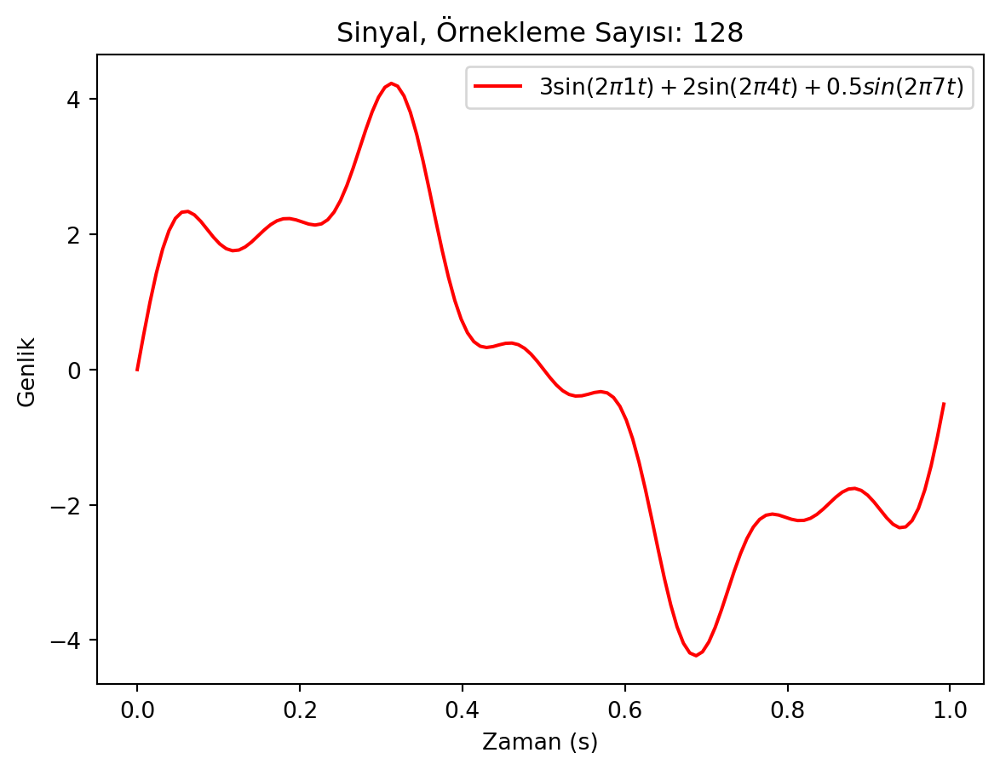
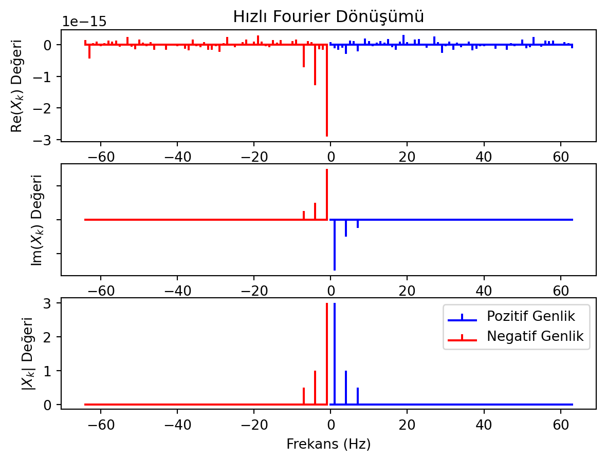
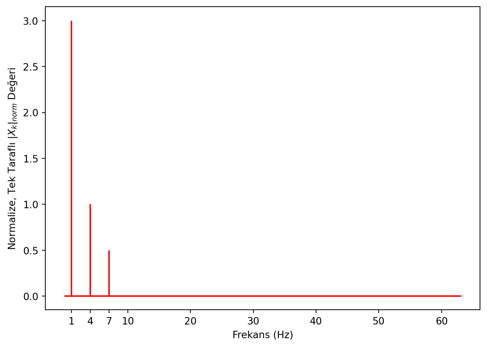

HFD - Hızlı Fourier Dönüşümü (FFT - Fast Fourier Transform)
HFD, Gauss’un yayınlanmamış 1805 yılındaki çalışmalarına dayanır. Temel olarak KFD algoritmasını daha küçük parçalara bölerek hesaplar. Bu küçük parçaları hesaplamak için ise tekrarlanan (rekürsif, recursive) bir algoritma kullanır.
KFD Formülündeki Simetri
KFD denklemini hatırlayalım.
\[
X_{k} = \sum_{n=0}^{N-1} x_{n} e^{-i 2 \pi k n / N}
\]
\(k+N\)’inci frekansın değeri ise aşağıdaki gibidir.
\[
\begin{align*}
X_{k+N} =& \sum_{n=0}^{N-1} x_{n} e^{-i 2 \pi k n / N} e^{-i 2 \pi N n / N}\\
=& \sum_{n=0}^{N-1} x_{n} e^{-i 2 \pi k n / N}\\
=& X_{k}
\end{align*}
\]
Formülde bir simetri elde ettik \(X_{k+N}=X_{k}\).
Bu simetrinin anlamı şudur: \(X_{k}\)’nın değeri, \(X_{k+N}\) değerine eşit olması demek, aynı değeri veren bazı \(X_{k}\) değerleri olduğunu gösterir. Ayrıca gösterilebiliriz ki bu simetri \(k+N\), \(x+2N\), \(\cdots\) için de geçerlidir. O halde simetriyi \(X_{k+i\times N}=X_{k}\) şeklinde genelleştirebiliriz. Burada \(i\) bir tam sayıdır.
Hızlanmak İçin Yapılan Numaralar
KFD algoritmasının simetri özelliğini kullanarak N sayısını 2’ye bölelim. Böldüğümüz kısımlar \(n\)’in tek ve çift olduğu durumlar olsun.
\[
\begin{align*}
X_{k} =& \sum_{n=0}^{N-1} x_{n} e^{-i 2 \pi k n / N}\\
=& \sum_{m=0}^{N/2-1} x_{2m} e^{-i 2 \pi k (2m) / N} + \sum_{m=0}^{N/2-1} x_{2m+1} e^{-i 2 \pi k (2m+1) / N}\\
\end{align*}
\]
Bu toplamdaki ilk terim \(n\)’in çift terimlerinden oluşuyor, ikinci terim ise tek terimlerden oluşuyor. Hesaplamaya devam edelim ve \(2m/N\) yerine \(m/(N/2)\) yazalım.
\[
\begin{align*}
X_{k} =& \sum_{m=0}^{N/2-1} x_{2m} e^{-i 2 \pi k m / (N/2)} + \sum_{m=0}^{N/2-1} x_{2m+1} e^{-i 2 \pi k (2m+1) / N}\\
=& \sum_{m=0}^{N/2-1} x_{2m} e^{-i 2 \pi k m / (N/2)} + e^{-i 2 \pi k / N} \sum_{m=0}^{N/2-1} x_{2m+1} e^{-i 2 \pi k m / (N/2)}\\
\end{align*}
\]
KFT’daki simetri bize şunu söyler. \(X_{k}\)’yı hesaplarken \(N/2\)’ye kadar olan kısmı hesaplıdır. Yani yukarıdaki toplamın sadece birisini hesapladığımızda diğerini de hesaplamış oluruz. Bu da bilgisayara yaptıracağımız işi yarıya indirir.
Yukarıda yaptığımız yarıya bölme işlemini tekrar tekrar yaparak en küçük parçaya gidilir. HFD algoritmasının tekrarlanan yapısı da buradan gelir. Bunun için algoritmada kendi kendine çağıran bir yapı kullanacağız. Bu yapıya fonksyion tekrarlanması (function recursion) adı verilir [1].
HFD algoritması bu şekilde çalışarak hesaplama zamanını oldukça azaltır.
Kod
fourier_hfd fonksiyonu bilYonMod.py dosyasına tanımlıdır. Aşağıdaki kodu inceleyelim.
Not
fourier_hfd fonksiyonunu inceleyiniz.
Dikkat
fourier_hfd fonksiyonu, sadece \(N\) sayısının 2’nin üssü olduğu durumlar için çalışır. Yani fourier_hfd fonksiyonu verdiğiniz her sinyal için çalışmaz.
################################################## Modül yolunu varsayılan yol olarak ekleme ve modülü içe aktarmaimport osimport sys# Bu dosyanın bulunduğu dizini alcurrent_dir = os.path.abspath('')# 3 üst dizine çıkmodule_dir = os.path.join(os.path.abspath(os.path.join(current_dir, os.pardir, os.pardir, os.pardir)), 'moduller')# moduller dizinini yol olarak eklesys.path.append(module_dir)# bilYonMod.py modülünü içe aktarimport bilYonMod as bym################################################import matplotlib.pyplot as pltimport numpy as np# Örnelem sayısıorneklemOrani =128# ZamanorneklemAraligi =1.0/orneklemOranit = np.arange(0, 1, orneklemAraligi)# Toplam Örnekleme SayısıN=len(t)# Birinci dalgayı olustur# Frekansfrek =1.# Birinci dalgayı oluşturx =3*np.sin(2* np.pi* frek* t)# İkinci dalganın frekansıfrek =4# İkinci dalgayı oluşturx += np.sin(2* np.pi* frek* t)# Üçüncü dalganın frekansıfrek =7# Üçüncü dalgayı oluşturx +=0.5* np.sin(2* np.pi* frek* t)# Sinyali Çizplt.plot(t, x, "r", label="$3\\sin(2\\pi 1 t)+ 2\\sin(2\\pi 4 t)+ 0.5sin(2\\pi 7 t)$")plt.ylabel("Genlik")plt.xlabel("Zaman (s)")plt.title(f"Sinyal, Örnekleme Sayısı: {N}")plt.legend()plt.show()plt.close()# -------------------------# Hızlı Fourier DönüşümüX=bym.fourier_hfd(x)# Frekansif N%2==0: maksFrek= N/2 XPoz= X[:int(N/2)] XNeg= X[int(N/2):] frekCoz=maksFrek/ (N/2)else: maksFrek= (N-1)/2 XPoz= X[:int((N-1)/2)] XNeg= X[int((N+1)/2):] frekCoz=maksFrek/ ((N-1)/2)frekPoz= np.arange(0, maksFrek, frekCoz)frekNeg= np.arange(-maksFrek, 0, frekCoz)# Çizfig, axs = plt.subplots(3, 1)# Re(X) Değeriaxs[0].stem(frekPoz, np.real(XPoz)/(N/2), 'b', label='Pozitif Genlik', markerfmt=" ", basefmt="-b")axs[0].stem(frekNeg, np.real(XNeg)/(N/2), 'r', label='Negatif Genlik', markerfmt=" ", basefmt="-r")# Imag(X) Değeriaxs[1].stem(frekPoz, np.imag(XPoz)/(N/2), 'b', label='Pozitif Genlik', markerfmt=" ", basefmt="-b")axs[1].stem(frekNeg, np.imag(XNeg)/(N/2), 'r', label='Negatif Genlik', markerfmt=" ", basefmt="-r")# |X| Değeriaxs[2].stem(frekPoz, np.abs(XPoz)/(N/2), 'b', label='Pozitif Genlik', markerfmt=" ", basefmt="-b")axs[2].stem(frekNeg, np.abs(XNeg)/(N/2), 'r', label='Negatif Genlik', markerfmt=" ", basefmt="-r")# Kozmetikaxs[0].set_ylabel("Re($X_{k}$) Değeri")axs[0].set_title("Hızlı Fourier Dönüşümü")axs[1].set_ylabel("Im($X_{k}$) Değeri")axs[1].set_yticklabels([])axs[2].set_ylabel("|$X_{k}$| Değeri")axs[2].set_xlabel("Frekans (Hz)")plt.legend()plt.show()plt.close()# Tek bir tarafı çizdir (Pozitif Frekanslar)plt.stem(frekPoz, np.abs(XPoz)/(N/2), 'r', markerfmt=" ", basefmt="-r")plt.xlabel("Frekans (Hz)")plt.ylabel("Normalize, Tek Taraflı |$X_{k}$|$_{norm}$ Değeri")# X Eksenindeki Sayıları Belirleplt.xticks([1, 4, 7, 10, 20, 30, 40, 50, 60])plt.tight_layout()plt.show()plt.close()



Hız Testi
################################################## Modül yolunu varsayılan yol olarak ekleme ve modülü içe aktarmaimport osimport sys# Bu dosyanın bulunduğu dizini alcurrent_dir = os.path.abspath('')# 3 üst dizine çıkmodule_dir = os.path.join(os.path.abspath(os.path.join(current_dir, os.pardir, os.pardir, os.pardir)), 'moduller')# moduller dizinini yol olarak eklesys.path.append(module_dir)# bilYonMod.py modülünü içe aktarimport bilYonMod as bym################################################import numpy as npimport time# Örnekleme sayısıorneklemOrani =2**11# ZamanorneklemAraligi =1.0/orneklemOranit = np.arange(0, 1, orneklemAraligi)# Toplam Örnekleme SayısıN=len(t)# Birinci dalgayı olustur# Frekansfrek =1.# Birinci dalgayı oluşturx =3*np.sin(2* np.pi* frek* t)# İkinci dalganın frekansıfrek =4# İkinci dalgayı oluşturx += np.sin(2* np.pi* frek* t)# Üçüncü dalganın frekansıfrek =7# Üçüncü dalgayı oluşturx +=0.5* np.sin(2* np.pi* frek* t)print(f"Örnekleme Sayısı: {N}")# Kesikli Fourier Dönüşümüstart = time.time()X=bym.fourier_kfd(x)end = time.time()print(f"Kesikli Fourier Dönüşümü: {end-start:.2f} saniye")# Hızlı Fourier Dönüşümüstart = time.time()X=bym.fourier_hfd(x)end = time.time()print(f"Hızlı Fourier Dönüşümü : {end-start:.2f} saniye")
Grafikteki y ekseni, dalga içerisindeki frekansların büyüklüğünü gösterir. Yani 5 Hz’e sahip olan dalganın genliği, 10 Hz’e sahip olan dalganın genliğinin yarısıdır.
Not
Hızlı Fourier dönüşümünde scipy, numpy’dan daha hazlıdır [2].
Problemler
Problem 1
Açısal frekansı 5, genliği 10 olan bir cosinüs sinyali ve açısal frekansı 10, genliği 5 olan bir sinüs sinyalinin toplamını çizdirin. Örneklem oranı \(100\), \(t=[0,6)\) aralığında olsun. Sinyalin HFD’sini hesaplayın ve doğru frekanslar için çizdirin.
Problem 2
Bir sinyalin frekans uzayını kullanarak örneklem miktarını arttıralım. Bunun için örnek bir sinyal oluşturacağız. Bu sinyalin örneklem sayısını frekans uzayında arttırıp efektif olarak interpolasyon yapacağız.
Bir sinyal oluşturun. Bu sinyal, \(0\) ile \(8\pi\) arasında, her \(\pi/2\) aralığında bir örnekleme ile alınmış olsun.
Sinyal \(\sin(t) + 0.3\sin(0.2t)\) şeklinde olsun.
Bu sinyalin HFD’sini hesaplayın.
Bu sinyalin frekans bileşenlerini bulun.
Bu sinyalin örneklem sayısını \(64\) kat artırın.
Yeni örneklem sayısına göre frekans bileşenlerini bulun.
Yeni bir hfd sinyal değişkeni oluşturun. Bu yeni hfd sinyal değişkeni yeni örneklem sayısından oluşan frekans boyutunda olacaktır.
Eski hfd sinyalinin 0. bileşenini yeni hfd sinyal değişkeninin 0. bileşenine atayın.
Eski hfd sinyalinin pozitif ([1:N//2+1]) bileşenlerini ve negatif ([-N//2+1:]) bileşenlerini yeni hfd sinyal değişkenine atayın.
Eski ve yeni hfd sinyallerini çizdirin.
Yeni hfd sinyalini ters Fourier dönüşümü yaparak zaman uzayına çevirin.
Orijinal ve interpolasyon yapılmış sinyalleri çizdirin.
Problem 3
Zamandan bağımsız Schrödinger denklemini boşluk için çözdüğümüzde Gaussian dalga paketini elde ederiz. Konum uzayındaki dalga fonksiyonu aşağıdaki gibidir.
Burada \(\mu\) paketin merkezini yani ortalama (mean) değeridir. \(\sigma_{x}\) ise \(x\) uzayındaki standart sapmayı yani belirsizliği verir. \(k_{0}= p/\hbar\) ise paketin momentumunu verir.
[5 Puan] Yukarıda verilen dalga paketinin konum uzayındaki olasılık yoğunluğunu çizdirin. Formülde \(\mu = 0\), \(\sigma_{x} = 0.1\) ve \(k_{0} = 10\) olarak alın. Konumu \(x = -1\) ile \(x = 1\) arasında on bin parçaya ayırarak alabilirsiniz.
[10 Puan] Elde ettiğiniz dalga paketinin Fourier dönüşümünü ve frekansları hesaplayın.
[5 Puan] Fourier dönüşümünden elde ettiğiniz Gaussian dalga paketinin momentum uzayındaki olasılık yoğunluğunu çizdirin.
[5 Puan] Aynı işlemi \(\sigma_x=0.001\) için tekrar edin. Konum uzayındaki olasılık fonksiyonunu ve momentum uzayındaki olasılık fonksiyonunu nasıl değişti? print() fonksiyonu ile açıklayın.
[5 Puan] Yukarıdaki işlem ile Heisenberg belirsizlik ilkesi arasında nasıl bir bağlantı vardır? print() fonksiyonu ile açıklayın.
Kaynaklar
Python Programming and Numerical Methods, Qingkai Kong, 2018